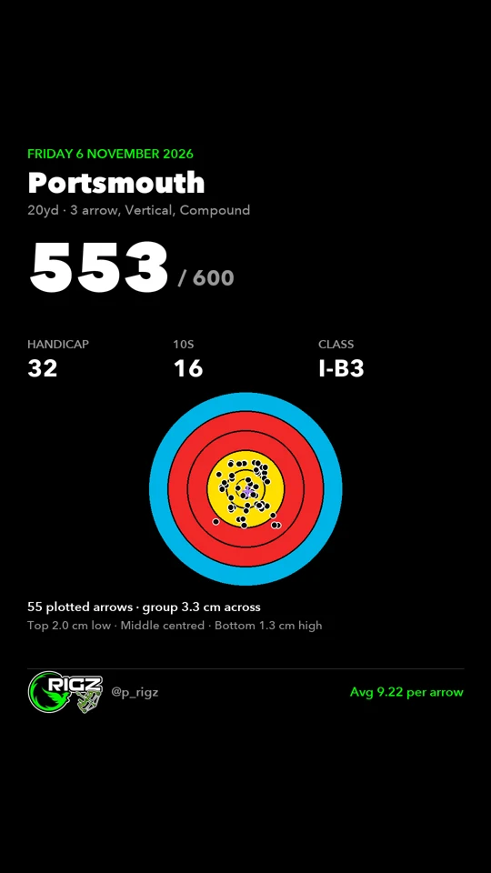
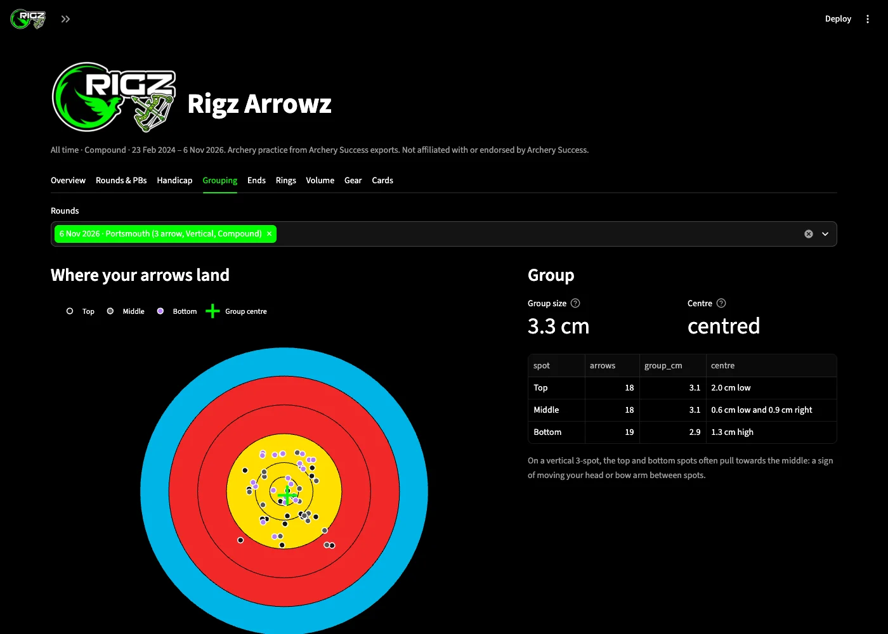
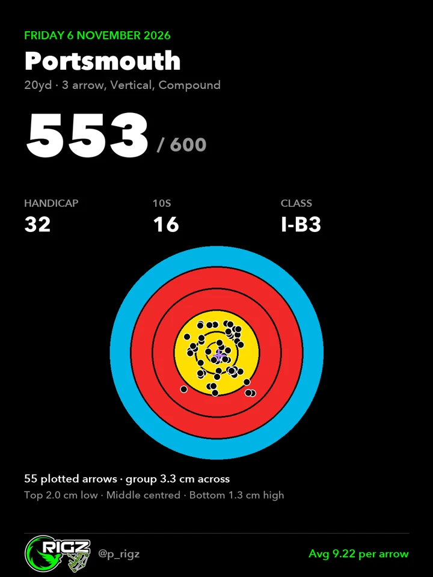
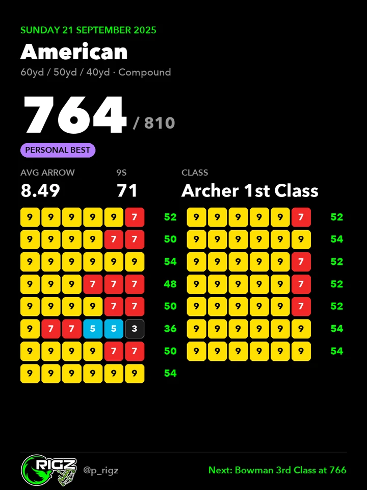
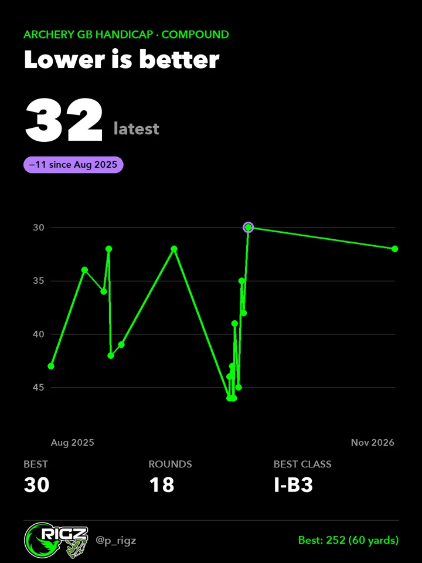
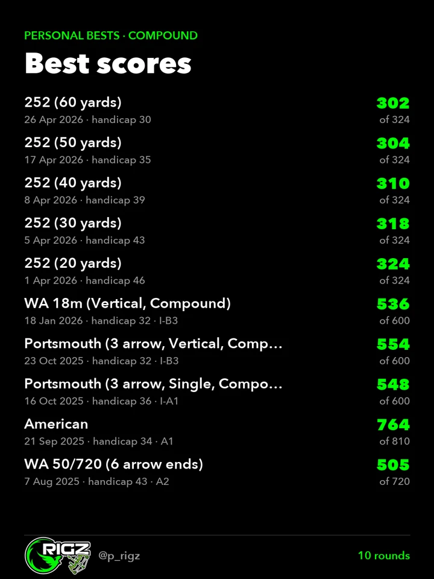
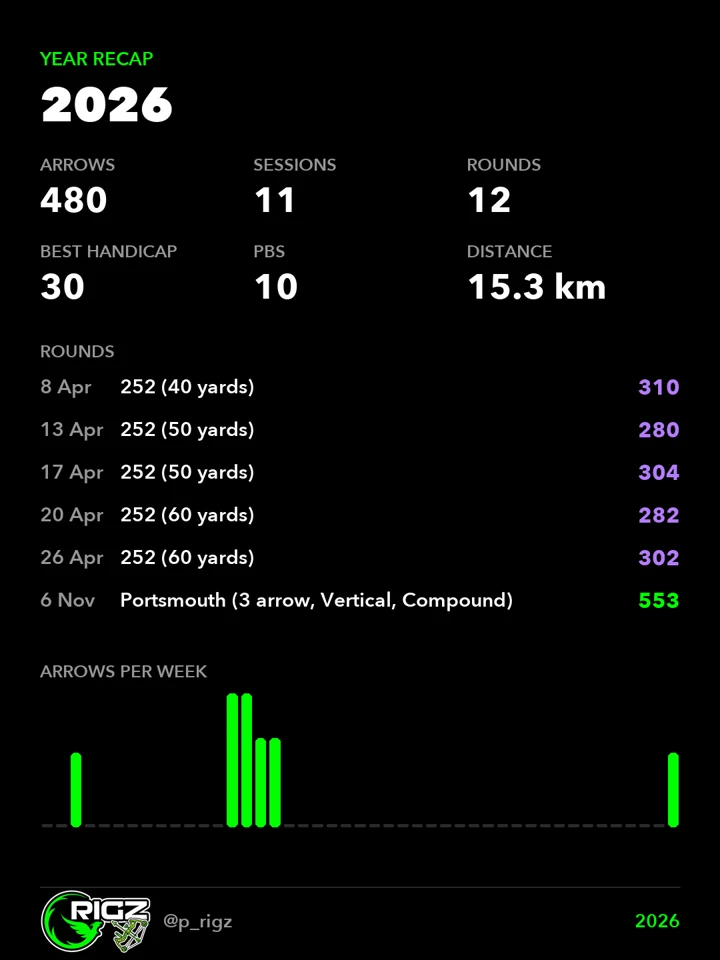
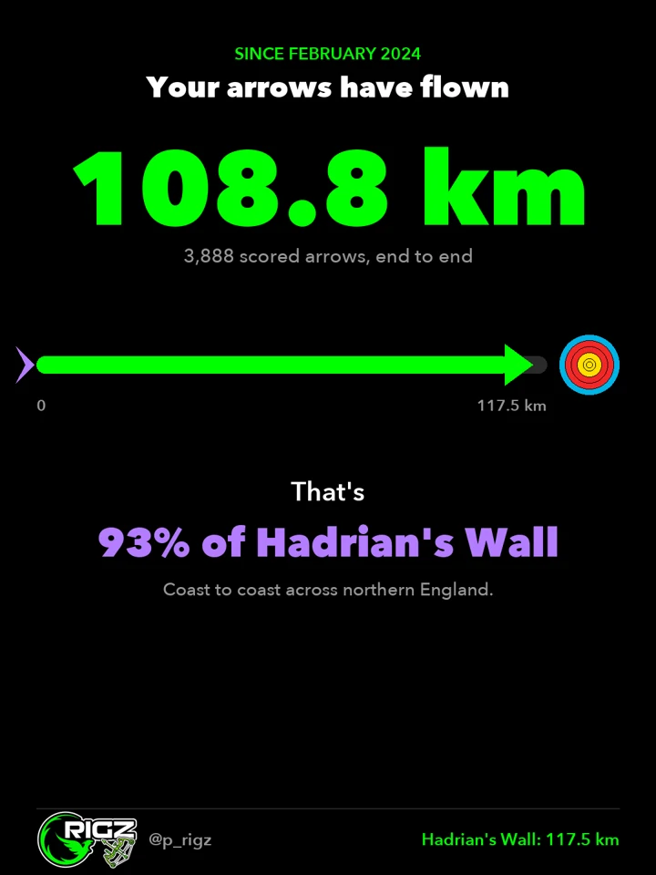
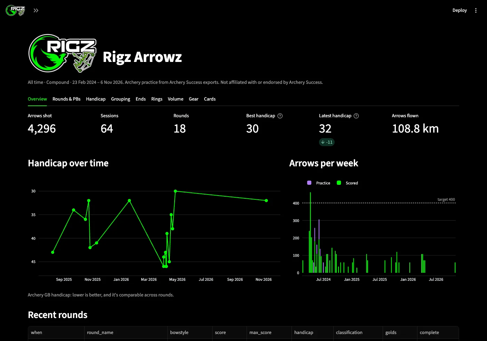
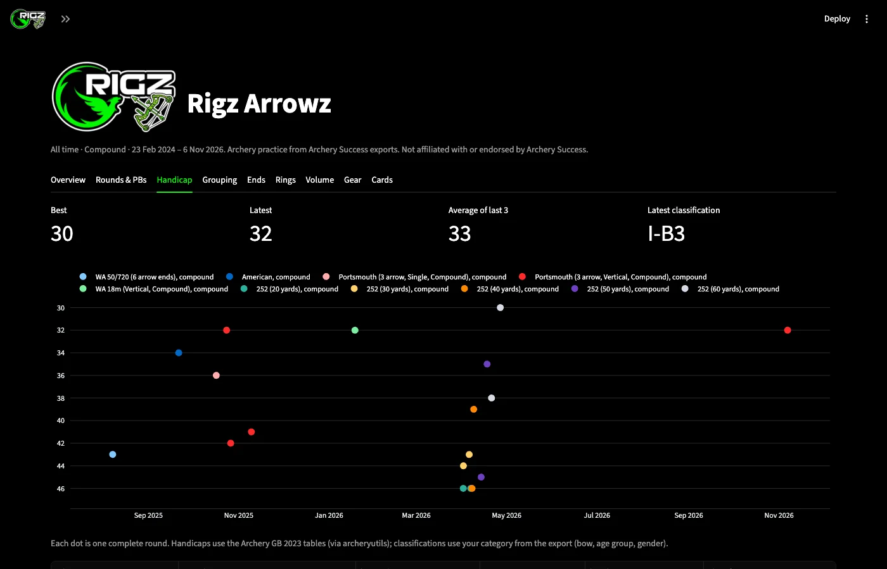

Rigz Arrowz · Built with Claude Code
Every arrow I score in Archery Success, turned into Archery GB handicaps, groupings, a dashboard and Instagram cards. Right-handed compound, previously recurve.
See the groupingFollow @p_rigz
Since 23 February 2024, as of 8 November 2026. Lower handicap is better.
How it works
Archery Success has no API like Hevy does, so this one reads the app's own exports instead.
On my phone: my full data as a zip, plus a scorecard PDF for each round I plot. Blipped to my Mac.
One click reads the newest export: every round, arrow by arrow, plus my bow setups and sight marks.
Every complete round gets its Archery GB handicap and classification, so a 252 and a Portsmouth sit on one scale.
Rounds, handicap progress, PBs, recaps and how far my arrows have flown, in the RIGZ colours.
Reading the plot
The scorecard PDF draws each plotted arrow as a tiny shape. Rigz Arrowz reads their exact positions, then checks itself: the score each position gives has to match the scorecard, end for end.

The average distance of each arrow from the middle of the group.
On the 3-spot, my top group sits 2 cm low and my bottom group 1.3 cm high. Something to work on.
All 55 plotted arrows score the same as the app says, once the compound inner 10 and arrow thickness are allowed for.
The cards
Plotted rounds show the arrows on the face. Older rounds show every end as coloured scores.






The dashboard
Overview, rounds and PBs, handicap, grouping, ends, rings, volume, gear and cards. Runs on my Mac, one double-click to open.


Built with
Rigz Arrowz is the second Rigz Labz project, built on what I made for Rigz Liftz.